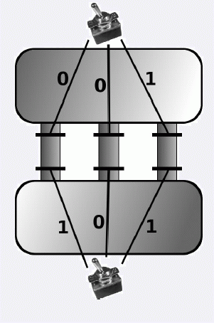

输入的第一行包含两个整数n和m.
接下来n行每行包含了一条通道的信息, 由四个整数a; S a; b; S b表示. a和b表示控制两个水闸的开关编号,而S a和S b为0或1, 表示水闸受开关控制的方式. S i = 0表示开关i关时水闸关, 以此类推.

输入的第一行包含两个整数n和m.
接下来n行每行包含了一条通道的信息, 由四个整数a; S a; b; S b表示. a和b表示控制两个水闸的开关编号,而S a和S b为0或1, 表示水闸受开关控制的方式. S i = 0表示开关i关时水闸关, 以此类推.
如果存在一种开关的状态使得所有通道都封闭, 则输出m行, 每行一个整数0或1. 第i行为0表示编号为i的开关应当关, 为1则表示开关应当开.
如果不存在这样的状态, 输出一行“IMPOSSIBLE”.
3 2
1 0 2 1
1 0 2 0
1 1 2 1
0
1对所有数据, n <= 250000;m <= 500000.